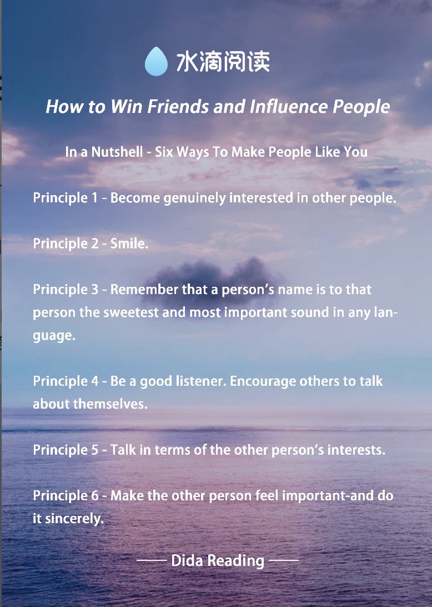

chapter9.3--handout
Background Information
paisley pattern
💧这一节开始卡叔就描述了aunty优越的生活条件，首先提到了paisley shawls，佩斯利披肩。佩斯利（Paisley）花纹诞生于古巴比伦，兴盛于波斯和印度。 它的图案据说是来自于印度教里的“生命之树”——菩提树叶或海枣树叶（我觉得是水滴的形状💧💧💧）。
💧18世纪中叶，拿破仑在远征埃及途中把带有这种纹样的克什米尔披肩作为纪念品带回法国，随即风靡整个欧洲上流社会。
💧而在之后的19世纪在苏格兰西部的一个叫佩斯利(paisley)的小镇，那里运用佩斯利涡纹旋花纹制成的羊绒披肩非常有名，渐渐的被人以“paisley pattern”所知。
💧佩斯利涡纹旋花纹以豪华质感和独一无二的精细纹理，被融入到珠宝、时装等当今世界顶级奢侈品牌的产品设计当中，在多种领域影响着当代的艺术设计。
wedgwood
💧Wedgwood是Josiah Wedgwood创办的瓷器界的奢侈品牌，1730 年出生于英国 Burslem 的陶工世家，世代都以制陶为生。Josiah Wedgwood 从小便在自家习陶，于 1759 年创立了Wedgwood 陶瓷厂，开始生产以 Wedgwood 为名的瓷器。
💧Josiah在品牌创立初期发明Cream Ware（乳白瓷器） ， 为Wedgwood 带来丰厚的利润，美丽的外观与具有竞争力的价格，促使 Wedgwood 乳白瓷器成为市场上的热销商品，也是英国瓷器史上的一大成就。
💧1765 年 Wedgwood 荣获英国皇家选用，夏绿蒂皇后特许他以Queen's Ware（皇后御用瓷器） 为名，这项殊荣让 Wedgwood 在上流社会中崭露头角，全欧洲皇家贵族竞相以拥有一套 Wedgwood 的餐具宴客为荣。
Josiah终其一生醉心于瓷器制作与材质的研发，最知名的发明当属历经了千百次的试验，终于在 1775 年成功问世的 Jasper ware（浮雕玉石系列）。
Wedgwood 骨瓷浮雕玉石的成功，被誉为继中国人于一千年前发明陶瓷之后的最重要及最杰出的陶瓷制造技术。
Madison Square Garden
💧麦迪逊广场花园(Madison Square Garden)位于曼哈顿中城，被纽约当地人简称为MSG或者干脆就叫做「花园」。它是位于全美最大的火车站之一的宾夕法尼亚车站上面，第8大道与第33街拐角处的一幢大型白色圆柱体建筑。
麦迪逊广场花园是体育娱乐活动的殿堂，众多球类赛事和摇滚音乐会等经常在这里举行，最初于1879年兴建完成的是麦迪逊广场，之后曾2次迁移，如今的建筑物则是1968年完成的第四代。场所虽然一再改变，但名称仍然沿用最初的名字。广场是为纪念美国宪法之父詹姆斯·麦迪逊而建造。
💧麦迪逊广场花园是纽约尼克斯、纽约游骑兵、纽约自由、圣约翰大学、红色风暴大学等球队的主场，也是个人演唱会、政治集会等大型室内活动的举办地。纽约在遭受9.11重创后的第一场励志音乐会和约翰·列侬（John Lennon）在1980年被谋杀之前的最后一场音乐会都是在这里举行。
Vocabulary
resignation
💧n. the act of telling your employer that you are leaving your job
名词：辞职; 顺从; 辞职书
💧Mr Morgan has offered his resignation and it has been accepted.
摩根先生己经递交了辞呈，并已获准。
inasmuch
💧used to introduce a phrase that explains why or how much something described in another part of the sentence is true
因为
💧This was a good decision inasmuch as it worked for you.
既然对你起作用，这就是个明智的决定。
withdraw
💧v. to take or move out or back, or to remove
动词：撤退; 撤走; 拿走; （从银行） 取 （钱）
💧He reached into his pocket and withdrew a sheet of notepaper.
他把手伸进口袋，掏出一张便签。
Crush Your Problems
- He tried to get out of accepting the car, but he couldn't without hurting her feelings. This lady, left all alone in a big house with her paisley shawls, her French antiques, and her memories, was starving for a little recognition.
💧get out of accepting，当你想表达拒绝的时候，也可以用这个方式，get out of debt还清债，get out of the traffic jam避开交通拥堵
💧starving for...这里表示渴望、想要，starve不仅仅是饿死了的意思哦
同类的词可以有很多延伸，比如starve for knowledge，也可以说hungry for knowledge，yearn for knowledge，还有包括下文的crave for knowledge下次准备写“想要”的时候，请收起你的I want～ - So the judge went in the house, typed out the pedigree and feeding instructions, and gave me a puppy worth several hundred dollars and one hour and fifteen minutes of his valuable time largely because I had expressed my honest admiration for his hobby and achievements.
💧还是卡叔惯用的短句并列，相信大家也会用啦～多个动词并列关系表示一系列动作的连贯发生。
这里想给大家说一个词，largely——这里表示很大程度上，都因为...
英文的表达中很多地方都会用到类似的副词，来加强动词的程度、或者句子的语气/情感，想让自己的语言更地道？其实不在于你背了点俚语什么的，而在于是否有加入这种其实很日常的说话方式。
💧同类的副词，你也可以用来锦上添花：
majorly主要的
fundamentally基本的
literally确实的
technically严格来讲
generally总体上
totally完全的（可以用在类似的对话😊A：I think Dida Reading is fabulous～ B：Totally）
- Claude Marais, a restaurant owner in Rouen, France, used this principle and saved his restaurant the loss of a key employee.
💧save在这里理解为什么意思呢？
挽救还是节省呢？
对比一下来判断：
save the company from the loss...把公司从损失中拯救出来
save the company the loss...为公司省掉了损失
很清楚啦～一个from可以判断出来不同对象之间的差异
不过也不能说有from的都是拯救的意思哦，比如：
I spent all the money I saved from my daily expense on your birthday gift.
所以啦，my point is...记得理解东西要看context哦～
Content Analysis
今天我们继续来看卡叔的论证: 真诚的赞美别人不仅能让你赢得商业机会，也会让你收获友谊。
接昨天的例子，讲习班学员R先生和太太拜访在长岛寡居的老姑妈。他和老姑妈聊起了她所住的这座古老的房子，勾起了她轻柔的回忆(tender memories)，分享当初如何和丈夫用爱建造者房子(it was built with love)。
R先生对房子的一切表示真诚的赞美(hearty admiration), 这一下触动了老姑妈内心深处最柔软的部分。她一直渴望能得到一点温暖和真心的赞美(she craved a little human warmth, a little genuine appreciation) ，R先生的认可和真诚赞美就像沙漠中涌出一泓泉水(it’s like a spring in the desert)，使她心底激动而感谢, 甚至愿意将丈夫生前留下的她所珍视的「派凯特」牌的汽车相赠(her gratitude couldn't adequately express itself with anything less than the gift of her cherished Packard)。
另一个例子是作者的另一个学员,一名景观设计师（a landscape architect），聊天中对法官的爱好和成就加以真诚的赞赏（expressed my honest admiration for his hobby and achievements），最后法官热情相赠价值百元的狗和他宝贵的时间。
对别人发出真诚的赞美，让人感受到被重视，这是有强大的力量的，无论是对于被赞美的还是给予赞美的，因为赠人玫瑰，手有余香
The roses in her hand, the flavor in mine.
同样因认可他人赢得了友谊的是法国鲁昂餐厅老板克劳德，一名对于他和公司非常重要的老员工，波莱特提出辞职, 这让他意识到可能对这位朋友和员工太苛刻了（too demanding）太理所当然了（take her too much for granted）。于是克劳德当着波莱特的面，有当着所有员工的面，甚至家人的面，对她的付出表示感激(expressing my appreciation for what she does)也表明对她的信心(reiterated my confidence in her), 最后波特莱撤回了她的离职申请（she withdrew her resignation）, 克劳德也更加信赖她(I can rely on her as never before) 。
所以使别人感觉到他的重要，而且真诚的这样做(Make the other person feel important-and do it sincerely) 是一条屡试不爽的人际交往黄金法则（golden rule）, 因为得到认可是每个人内心深处最热切的渴求
（the deepest craving in human nature I to be recognized and to feel important）
Today's Bonus
今天的故事中，对我来说最大的亮点就是...attorney的狗子们！
大家都撸过各种狗子，但是他们的英文名字你晓得不？今天一起来学一下吧～
💧哈士奇 Husky
傻狗No. 1必须是二哈，学名儿Siberian husky（西伯利亚哈士奇），是原始的古老犬种，在西伯利亚东北部、格陵兰南部生活。哈士奇名字的由来，是源自其独特的嘶哑声。宠物类的Husky比较温顺，是一种流行于全球的宠物犬。与金毛犬、拉布拉多并列为三大无攻击型犬类。
💧秋田犬Japanese Akita
日本国犬，在日本是家庭宠物犬。秋田犬是日本最大的狐狸犬种，这一大型狐狸犬就算在欧洲和美国这种狐狸犬种众多的国家也颇为引人瞩目。在日本，秋田犬是具有国家历史文物意义的犬，属国犬，因“忠犬八公”闻名于世，是日本指定的国家天然纪念物中唯一的大型犬。
💧泰迪（Poodle）
其实一直以为泰迪就是teddy bear的teddy，然鹅并不是，泰迪犬也称“贵宾犬”（Poodle），在德语中，Pudel是“水花飞溅”的意思，是犬亚科犬属的一种动物。贵宾犬的来源就像它为了拖出猎禽所涉过的水一样浑浊不清。
💧吉娃娃Chihuahua
吉娃娃是目前人们所知道最古老的犬种之一，原产于美洲，和墨西哥的古老文明有深厚而密切的关系。吉娃娃属小型犬种里最小型，优雅、警惕、动作迅速，以匀称的体格和娇小的体型广受人们的喜爱。
💧法斗Bulldog
法国斗牛犬（FRENCH BULLDOG）是一种活泼、聪明、肌肉发达的狗，骨骼沉重，背毛平滑、结构紧凑，体型中等或较小。表情显得警惕、好奇而感兴趣。
法国斗牛犬亲切，敦厚，忠诚，执著，勇敢，具有独特的品位，而且完全表露于表情与动作。对小孩和善，同时也是作风彪悍，能力强，对于新鲜事物有极强的好奇心的优秀玩具犬。
今天的狗子就说到这里啦～下面是总结复习时间：
